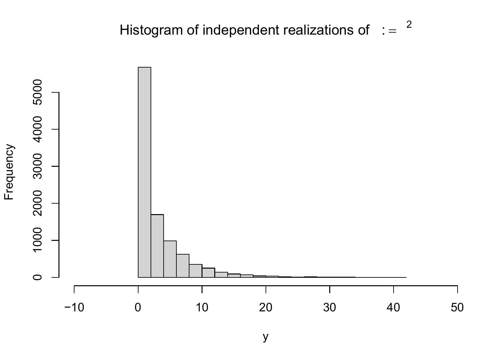

The transformation of random vectors and the analysis of their resulting distributions is a central topic of probabilistic modeling and, in particular, of frequentist inference. Here, a transformation means the application of a function to a random vector, where the function either transforms its components individually or combines them with one another. The central question is the following: “If a random vector \(\xi\) has a given distribution, what is the distribution of the random vector \(\upsilon\) that results from transforming \(\xi\)?” For the cases treated in this chapter, explicit solutions can be given for the distribution of the transformed random vectors. These are among the classical results of frequentist inference and are essential for understanding classical frequentist inference procedures such as confidence intervals and hypothesis tests.
For a first intuition, we restrict ourselves to the case of a single random variable. One can then understand the transformation of a random variable by looking at the transformation of its independent and identically distributed realizations. For example, consider the random variable \(\xi \sim N(0,1)\) and its transformation \(\upsilon := \xi^2\). If \(x_1 = 0.10, x_2 = -0.20, x_3 = 0.80\) are three realizations of three independent copies of \(\xi\), then this corresponds to the realizations \(y_1 = x_1^2 = 0.01, y_2 = x_2^2 = 0.04, y_3 = x_3^2 = 0.64\) of \(\upsilon\). In this example, \(\upsilon\) takes no negative values; the distribution of \(\upsilon\) therefore assigns probability density \(0\) to negative values. The R code below simulates these ideas. Figure 28.1 shows the histogram of the obtained realizations of the random variable \(\xi\) considered here, and Figure 28.2 shows the histogram of the squared realizations of \(\xi\), that is, independent and identically distributed realizations of \(\upsilon\).
# simulation specificationn =1e4# number of i.i.d. realizationsmu =1# expectation parameter of \xisigsqr =2# variance parameter of \xi# squaring a random variablex =rnorm(n, mu, sqrt(sigsqr)) # realizations x_i, i = 1,....,n of \xiy = x^2# realizations y_i = x_i^2 of \upsilon# output of the first eight values of the realizations of \xi and \upsilonprint(x[1:8], digits =2)
Figure 28.1: Histogram of 10,000 realizations of independent and identically normally distributed random variables.

Figure 28.2: Histogram of 10,000 squared realizations of independent and identically normally distributed random variables.
The following theorem, which we will not prove, is fundamental for the considerations below.
Theorem 28.1 (Transformation of a random vector) Let \(\xi : \Omega \to \mathcal{X}\) be a random vector, and let \(f:\mathcal{X} \to \mathbb{R}^m\) be a multivariate vector-valued function. Then \[\begin{equation}
\upsilon : \Omega \to \mathbb{R}, \omega \mapsto \upsilon(\omega) := (f \circ \xi)(\omega) := f(\xi(\omega))
\end{equation}\] is a random vector.
The theorem formalizes the intuition established above that applying a function to a random quantity generally yields another random quantity. A proof of Theorem 28.1 would have to establish the measurability of \(\upsilon\) as a consequence of the measurability of \(\xi\). In the following, often \(\mathcal{X} := \mathbb{R}\) and \(f : \mathbb{R} \to \mathbb{R}\). In this case we usually simply write \(\upsilon := f(\xi)\) and call \(\upsilon\) the transformed random variable.
In Section 28.1, we consider theorems on the transformation of random variables depending on the type of function \(f\) under consideration. In Section 28.2, we consider a theorem on the transformation of random vectors with a bijective transformation function and the determination of distributions under binary combinations of random variables.
28.1 Univariate transformation theorems
Theorem 28.2 gives a formula for computing the PDF \(p_\upsilon\) of \(\upsilon := f(\xi)\) when \(\xi\) is a random variable with PDF \(p_\xi\) and \(f\) is a bijective function.
Theorem 28.2 (Univariate PDF transformation for bijective mappings) Let \(\xi\) be a random variable with PDF \(p_\xi\) for which \(\mathbb{P}(]a,b[) = 1\), where \(a\) and/or \(b\) may be finite or infinite. Furthermore, let \[\begin{equation}
\upsilon := f(\xi),
\end{equation}\] where the univariate real-valued function \(f : ]a,b[ \to \mathbb{R}\) is differentiable and bijective on \(]a,b[\). Let \(f(]a,b[)\) denote the image of \(]a,b[\) under \(f\). Finally, let \(f^{-1}(y)\) be the value of the inverse function of \(f(x)\) for \(y \in f(]a,b[)\), and let \(f'(x)\) be the derivative of \(f\) at \(x\). Then the PDF of \(\upsilon\) is given by \[\begin{equation}
p_\upsilon : \mathbb{R} \to \mathbb{R}_{\ge 0}, y \mapsto p_\upsilon(y) :=
\begin{cases}
\frac{1}{\vert f^{'}\left(f^{-1}(y)\right) \vert}p_\xi\left(f^{-1}(y)\right)
& \mbox{ for } y \in f(]a,b[) \\
0
& \mbox{ for } y \in \mathbb{R} \setminus f(]a,b[).
\end{cases}
\end{equation}\]
Proof. First note that, because \(f\) is a differentiable bijective function on \(]a,b[\), \(f\) is either strictly increasing or strictly decreasing. Suppose first that \(f\) is strictly increasing on \(]a,b[\). Then \(f^{-1}\) is also increasing for all \(y \in f(]a,b[)\), and \[\begin{equation*}
P_\upsilon(y)
= \mathbb{P}(\upsilon \le y)
= \mathbb{P}\left(f(\xi) \le y\right)
= \mathbb{P}\left(f^{-1}(f(\xi)) \le f^{-1}(y)\right)
= \mathbb{P}\left(\xi \le f^{-1}(y)\right)
= P_\xi\left(f^{-1}(y)\right).
\end{equation*}\] Thus, \(P_\upsilon\) is differentiable at all points \(y\) at which both \(f^{-1}\) and \(P_\xi\) are differentiable. By the chain rule and the inverse function theorem \((f^{-1}(x))' = 1/f'(f^{-1}(x))\), the PDF \(p_\upsilon\) is therefore obtained as follows: \[\begin{equation*}
p_\upsilon(y)
= \frac{d}{dy}P_\upsilon(y)
= \frac{d}{dy}P_\xi\left(f^{-1}(y)\right)
= p_\xi\left(f^{-1}(y)\right)\frac{d}{dy}f^{-1}(y)
= \frac{1}{f'\left(f^{-1}(y)\right)} p_\xi\left(f^{-1}(y)\right).
\end{equation*}\] Because \(f^{-1}\) is strictly increasing, \(d/dy (f^{-1}(y))\) is positive, and the theorem applies. Analogously, if \(f\) is strictly decreasing on \(]a,b[\), then \(f^{-1}\) is also decreasing for all \(y \in f(]a,b[)\), and \[\begin{equation*}
P_\upsilon(y)
= \mathbb{P}(f(\xi) \le y)
= \mathbb{P}\left(f^{-1}(f(\xi)) \ge f^{-1}(y)\right)
= \mathbb{P}\left(\xi \ge f^{-1}(y)\right)
= 1 - P_\xi\left(f^{-1}(y) \right).
\end{equation*}\] By the chain rule and the inverse function theorem, \[\begin{equation*}
p_\upsilon(y)
= \frac{d}{dy}(1 - P_\upsilon(y))
= -\frac{d}{dy}P_\xi\left(f^{-1}(y)\right)
= -p_\xi\left(f^{-1}(y)\right)\frac{d}{dy}f^{-1}(y)
= -\frac{1}{f'\left(f^{-1}(y)\right)} p_\xi\left(f^{-1}(y)\right).
\end{equation*}\] Because \(f^{-1}\) is strictly decreasing, \(d/dy (f^{-1}(y))\) is negative, so \(-d/dy (f^{-1}(y))\) equals \(|d/dy (f^{-1}(y))|\), and the theorem applies.
An important use case of Theorem 28.2 is Theorem 28.3. Compared with Theorem 28.2, Theorem 28.3 gives a simplified formula for computing the PDF \(p_\upsilon\) of \(\upsilon := f(\xi)\) when \(f\) is a linear-affine function.
Theorem 28.3 (Univariate PDF transformation theorem for linear-affine mappings) Let \(\xi\) be a random variable with PDF \(p_\xi\), and let \[\begin{equation}
\upsilon = f(\xi) \mbox{ with } f(\xi) := a\xi + b \mbox{ for } a\neq 0.
\end{equation}\] Then the PDF of \(\upsilon\) is given by \[\begin{equation}
p_\upsilon : \mathbb{R} \to \mathbb{R}_{\ge 0}, y \mapsto p_\upsilon(y) :=
\frac{1}{|a|}p_\xi\left(\frac{y-b}{a}\right).
\end{equation}\]
Proof. First note that \[\begin{equation}
f^{-1} : \mathbb{R} \to \mathbb{R}, y \mapsto f^{-1}(y) = \frac{y - b}{a}
\end{equation}\] because then \(f \circ f^{-1} = \mbox{id}_{\mathbb{R}}\), as can be seen from \[\begin{equation}
f(f^{-1}(x)) = a \left(\frac{x - b}{a}\right) + b = x - b + b = x \mbox{ for all } x \in \mathbb{R}.
\end{equation}\] Furthermore, \[\begin{equation}
f' : \mathbb{R} \to \mathbb{R}, x \mapsto f'(x) = \frac{d}{dx}(ax + b) = a.
\end{equation}\] Thus, by Theorem 28.2, \[\begin{align}
\begin{split}
p_\upsilon : \mathbb{R} \to \mathbb{R}_{\ge 0}, y \mapsto p_\upsilon(y)
& = \frac{1}{\vert f^{'}\left(f^{-1}(y)\right)\vert}p_\xi\left(f^{-1}(y)\right) \\
& = \frac{1}{|a|}p_\xi\left(\frac{y - b}{a}\right).
\end{split}
\end{align}\]
Theorem 28.4 gives a formula for computing the PDF \(p_\upsilon\) of \(\upsilon := f(\xi)\) when \(f\) is bijective at least in pieces.
Theorem 28.4 (Univariate PDF transformation for piecewise bijective mappings) Let \(\xi\) be a random variable with outcome space \(\mathcal{X}\) and PDF \(p_\xi\). Furthermore, let \[\begin{equation}
\upsilon = f(\xi),
\end{equation}\] where \(f\) is such that the outcome space of \(\xi\) can be partitioned into a finite number of sets \(\mathcal{X}_1,...,\mathcal{X}_k\), with a corresponding number of sets \(\mathcal{Y}_1 := f(\mathcal{X}_1), ..., \mathcal{Y}_k :=
f(\mathcal{X}_k)\) in the outcome space \(\mathcal{Y}\) of \(\upsilon\) (where not necessarily \(\mathcal{Y}_i \cap \mathcal{Y}_j = \emptyset, 1 \le i,j \le k\)), such that the mapping \(f\) is bijective for all \(\mathcal{X}_1,...,\mathcal{X}_k\), that is, \(f\) is a piecewise bijective mapping. For \(i = 1,...,k\), let \(f_i^{-1}\) denote the inverse function of \(f\) on \(\mathcal{Y}_i\). Finally, assume that the derivatives \(f_i^{\prime}\) exist and are continuous for all \(i=1,...,k\). Then a PDF of \(\upsilon\) is given by \[\begin{equation}
p_\upsilon : \mathcal{Y} \to \mathbb{R}_{\ge 0}, y \mapsto p_\upsilon(y) :=
\sum_{i=1}^k 1_{\mathcal{Y}_i} (y) \frac{1}{\vert f^{'}_i(f^{-1}_i(y)) \vert}p_\xi\left(f^{-1}_i(y)\right).
\end{equation}\]
Theorem 28.5 gives a formula for computing the PDF \(p_\upsilon\) of \(\upsilon := f(\xi)\) when \(\xi\) is a random vector with PDF \(p_\xi\) and \(f\) is a bijective multivariate vector-valued function. It is a direct generalization of Theorem 28.2.
Theorem 28.5 (Multivariate PDF transformation for bijective mappings) Let \(\xi\) be an \(n\)-dimensional random vector with outcome space \(\mathbb{R}^n\) and PDF \(p_\xi\). Furthermore, let \[\begin{equation}
\upsilon := f(\xi),
\end{equation}\] where the multivariate vector-valued function \(f : \mathbb{R}^n \to \mathbb{R}^n\) is differentiable and bijective. Finally, let \[\begin{equation}
J^f(x)
= \left(\frac{\partial}{\partial x_j}f_i(x)\right)_{1\le i \le n, 1 \le j \le n}
\in \mathbb{R}^{n \times n}
\end{equation}\] be the Jacobian matrix of \(f\) at \(x \in \mathbb{R}^n\), let \(|J^f(x)|\) denote the determinant of \(J^f(x)\), and suppose that \(|J^f(x)| \neq 0\) for all \(x \in \mathbb{R}^n\). Then a PDF of \(\upsilon\) is given by \[\begin{equation}\label{eq:mpdf_transform}
p_\upsilon : \mathbb{R}^n \to \mathbb{R}_{\ge 0}, y \mapsto p_\upsilon(y) :=
\begin{cases}
\frac{1}{|J^f\left(f^{-1}(y)\right)|}p_\xi\left(f^{-1}(y)\right)
& \mbox{ for } y\in f(\mathbb{R}^n) \\
0
& \mbox{ for } y \in \mathbb{R}^n \setminus f(\mathbb{R}^n)
\end{cases}
\end{equation}\]
The following so-called convolution theorem gives a formula for computing the PDF \(p_\upsilon\) of \(\upsilon := \xi_1 + \xi_2\) when \(\xi_1\) and \(\xi_2\) are two random variables with PDFs \(p_{\xi_1}\) and \(p_{\xi_2}\).
Theorem 28.6 (Sum of independent random variables (convolution)) Let \(\xi_1\) and \(\xi_2\) be two continuous independent random variables with PDFs \(p_{\xi_1}\) and \(p_{\xi_2}\), respectively. Let \(\upsilon := \xi_1 + \xi_2\) be the sum of \(\xi_1\) and \(\xi_2\). Then a PDF of the distribution of \(\upsilon\) is given by \[\begin{equation}
p_\upsilon(y)
= \int_{-\infty}^\infty p_{\xi_1}(y - x_2)p_{\xi_2}(x_2)\,dx_2
= \int_{-\infty}^\infty p_{\xi_1}(x_1)p_{\xi_2}(y - x_1)\,dx_1.
\end{equation}\] The formula for the PDF \(p_\upsilon\) is called the convolution of \(p_{\xi_1}\) and \(p_{\xi_2}\).
Proof. We use the multivariate PDF transformation theorem for bijective mappings. To this end, first define \[\begin{equation}
f: \mathbb{R}^2 \to \mathbb{R}^2, x \mapsto f(x) :=
\begin{pmatrix}
x_1 + x_2 \\
x_2
\end{pmatrix}
:=
\begin{pmatrix}
z_1 \\ z_2
\end{pmatrix}.
\end{equation}\] The inverse function of \(f\) is then given by \[\begin{equation}
f^{-1}: \mathbb{R}^2 \to \mathbb{R}^2, z \mapsto f^{-1}(z) :=
\begin{pmatrix}
z_1 - z_2 \\
z_2
\end{pmatrix},
\end{equation}\] because then \(f \circ f^{-1} = \mbox{id}_{\mathbb{R}^2}\), as can be seen from \[\begin{equation}
f^{-1}\left(f(x)\right)
=
f^{-1}
\begin{pmatrix}
x_1 + x_2 \\
x_2
\end{pmatrix}
=
\begin{pmatrix}
x_1 + x_2 - x_2\\
x_2
\end{pmatrix}
=
\begin{pmatrix}
x_1 \\
x_2
\end{pmatrix}.
\end{equation}\] The Jacobian matrix of \(f\) is \[\begin{equation}
J^{f}(x) =
\begin{pmatrix}
\frac{\partial}{\partial x_1} f_1(x) & \frac{\partial}{\partial x_2} f_1(x) \\
\frac{\partial}{\partial x_1} f_2(x) & \frac{\partial}{\partial x_2} f_2(x) \\
\end{pmatrix}
=
\begin{pmatrix}
\frac{\partial}{\partial x_1} (x_1 + x_2)
& \frac{\partial}{\partial x_2} (x_1 + x_2)
\\
\frac{\partial}{\partial x_1} x_2
& \frac{\partial}{\partial x_2} x_2 \\
\end{pmatrix}
=
\begin{pmatrix}
1 & 1 \\
0 & 1 \\
\end{pmatrix},
\end{equation}\] and hence the Jacobian determinant is \(|J^f(x)| = 1\). Furthermore, independence of \(\xi_1\) and \(\xi_2\) implies \[\begin{equation}
p_{\xi_1,\xi_2}(x_1,x_2) = p_{\xi_1}(x_1)p_{\xi_2}(x_2).
\end{equation}\] Substituting and integrating with respect to \(x_2\) gives, for \(z \in f(\mathbb{R}^2)\), \[\begin{align}
\begin{split}
p_\zeta(z)
& = \frac{1}{|J^f\left(f^{-1}(z)\right)|}p_\xi\left(f^{-1}(z)\right) \\
& = \frac{1}{1}p_{\xi_1,\xi_2}\left(z_1 - z_2, z_2\right) \\
& = p_{\xi_1}(z_1 - z_2)p_{\xi_2}(z_2).
\end{split}
\end{align}\] Integration over \(z_2\) then gives a PDF for the marginal distribution of \(\zeta_1\), \[\begin{align}
\begin{split}
p_{\zeta_1}(z_1)
& = \int_{-\infty}^{\infty} p_{\xi_1}(z_1 - z_2)p_{\xi_2}(z_2)\,dz_2.
\end{split}
\end{align}\] With \(\zeta_1 = \xi_1 + \xi_2 = \upsilon\), the first form of the convolution theorem follows as \[\begin{align}
p_\upsilon(y)
& = \int_{-\infty}^{\infty} p_{\xi_1}(y - x_2)p_{\xi_2}(x_2)\,dx_2.
\end{align}\]
Study questions
Explain the concept of the transformation of a random variable using the example \(\upsilon := \xi^2\).